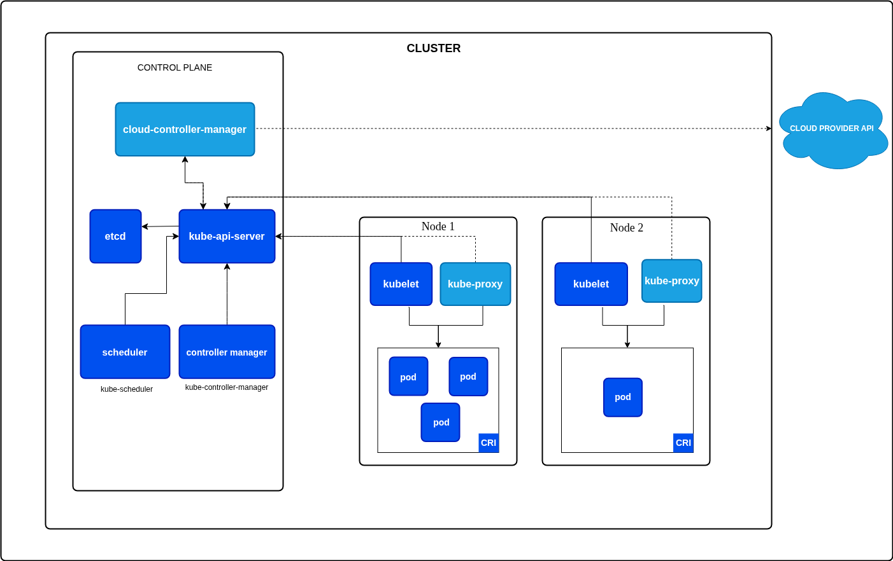

Kubernetes
Table of Contents
Kubernetes (K8s) is an open-source container orchestration platform that automates the deployment, scaling and management of containerized applications. It was originally developed by Google and is now maintained by the Cloud Native Computing Foundation (CNCF). Kubernetes provides a robust framework for running distributed systems resiliently, with features such as service discovery, load balancing, storage orchestration, automated rollouts and rollbacks, self-healing and secret and configuration management.
Table of Contents
Architecture

A Kubernetes cluster is composed of two main types of nodes:
1. Control Plane Nodes
Control plane nodes are responsible for managing the overall state of the cluster. They make global decisions about the cluster (such as scheduling), maintain cluster state and handle cluster events. Key components running on control plane nodes include:
- kube-apiserver: Serves the Kubernetes API and is the entry point for all administrative tasks.
- etcd: A distributed key-value store that holds all cluster data.
- kube-scheduler: Assigns workloads (pods) to worker nodes based on resource availability and policies.
- kube-controller-manager: Runs controllers that handle routine tasks (e.g., node management, replication).
- cloud-controller-manager: Integrates with cloud provider APIs (if applicable).
2. Worker Nodes
Worker nodes (sometimes called minions) are where the actual application workloads run. Each worker node contains the necessary services to run containers and communicate with the control plane. Key components include:
- kubelet: An agent that ensures containers are running in a Pod as expected. It is the component actually responsible for starting containers on the node, as instructed by the control plane after the scheduler assigns a Pod to this node.
- kube-proxy: Handles network routing and load balancing for services.
- Container runtime: Software responsible for running containers (e.g., containerd, Docker).
Node Summary
- Control Plane Nodes: Manage the cluster, maintain desired state and orchestrate workloads.
- Worker Nodes: Run application containers and report status to the control plane.
Both node types are essential for a functioning Kubernetes cluster. In production, control plane and worker nodes are often separated for security and scalability.
Init Containers in Kubernetes
Init containers are specialized containers that run before app containers in a Pod. They are commonly used to perform setup tasks, such as initializing data, waiting for a service to be available, or setting up configuration files. Init containers must complete successfully before the main application containers start. If an init container fails, Kubernetes restarts the Pod until the init container succeeds.
Example: Pod Descriptor with Init Container and Nginx
Below is an example of a Pod manifest that uses an init container to perform a simple setup before starting the main Nginx container:
apiVersion: v1
kind: Pod
metadata:
name: nginx-with-init
spec:
initContainers:
- name: init-myservice
image: busybox
command: ['sh', '-c', 'echo Initializing... && sleep 5']
containers:
- name: nginx
image: nginx:latest
ports:
- containerPort: 80
Applying the Pod Manifest and Getting Pod Status
To create the Pod using the above manifest, save it to a file (e.g., nginx-init-pod.yaml) and run:
kubectl apply -f nginx-init-pod.yaml
To check the status of the Pod:
kubectl get pod nginx-with-init
This will show the current status of the Pod, including whether the init container has completed and the main container is running.
Volumes in Kubernetes
Kubernetes Volumes provide a way for containers in a Pod to access shared storage. Volumes solve the problem of data persistence and sharing between containers, as the filesystem inside a container is ephemeral and lost when the container restarts.
VolumeMounts
A volumeMount is a specification within a container definition that tells Kubernetes where to mount a volume inside the container’s filesystem. Each container in a Pod can mount one or more volumes at different paths.
Volume Types
Kubernetes supports several types of volumes, each designed for different use cases. Some of the most common volume types include:
emptyDir
Temporary storage created for a Pod, deleted when the Pod is removed. Useful for scratch space or sharing files between containers in a Pod.
hostPath
Mounts a file or directory from the host node’s filesystem into the Pod. Useful for accessing host resources, logs, or tools. type of file or directory on the host. Options include:
DirectoryOrCreate: Creates a directory if it does not exist.Directory: Must already exist and be a directory.FileOrCreate: Creates a file if it does not exist.File: Must already exist and be a file.Socket,CharDevice,BlockDevice: For mounting special device files.
configMap
A configMap volume provides configuration data to Pods as files or environment variables. This is useful for separating configuration from application code and for dynamically updating configuration without rebuilding images.
secret
A secret volume is used to pass sensitive information, such as passwords, OAuth tokens, or ssh keys, to Pods. Secrets are stored in base64-encoded form and mounted as files or exposed as environment variables.
persistentVolumeClaim (PVC)
A persistentVolumeClaim (PVC) volume connects a Pod to a PersistentVolume (PV) for durable, cluster-managed storage. PVCs allow Pods to request and use storage resources abstracted from the underlying storage implementation (local disk, NFS, cloud storage, etc.).
Example: Pod with emptyDir and hostPath Volumes
apiVersion: v1
kind: Pod
metadata:
name: volume-demo
spec:
containers:
- name: app
image: busybox
command: ['sh', '-c', 'echo Hello > /data/message && sleep 3600']
volumeMounts:
- name: cache-volume
mountPath: /data
- name: host-logs
mountPath: /host-logs
volumes:
- name: cache-volume
emptyDir: {}
- name: host-logs
hostPath:
path: /var/log
type: Directory
In this example:
cache-volumeusesemptyDirfor temporary storage shared within the Pod.host-logsmounts the host’s/var/logdirectory into the Pod.
These volume types are defined in the volumes section of a Pod spec and are mounted into containers using volumeMounts.